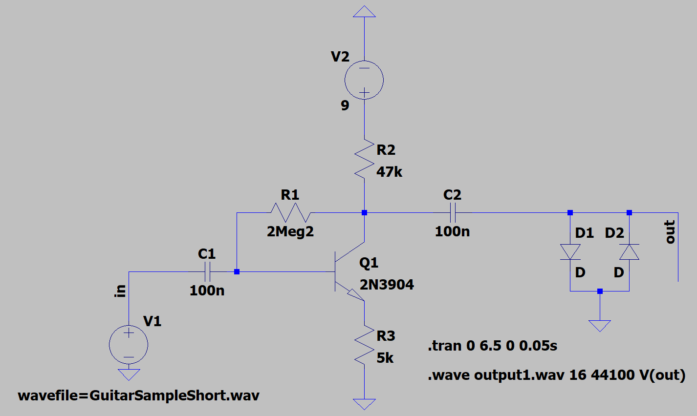

I have fully designed and simulated a distortion guitar pedal digitally using KiCad and LTSpice. This project is still currently a work in progress, however, and I have yet to acquire some of the parts necessary to test it on my guitar.
Simulation

I designed a distortion pedal for an electric guitar and simulated its effect in LTSpice. This pedal uses a BJT Common Emitter amplifier and hard-clipping distortion. Hard clipping is where the signal is amplified, then gets sent through clipping diodes, which abruptly "chop" the peaks of the wave. As opposed to soft clipping, where the clipping diodes are located in the feedback of the amplifier, creating a smoother "chopping" of the waveform, this is commonly referred to as an overdrive pedal.
You can see the effect of the pedal for yourself with the following audios:
Original:
Distorted:
Project Goals
I intend to make an overdrive pedal (soft clipping) in addition to the distortion pedal, and I intend to breadboard both of them, and test them out on my guitar. I will also definitely be improving the circuit by adding control knobs for volume, distortion, and tone. After designing the whole thing, I will get a PCB and casing for it, where it will attain its final and glorious form.